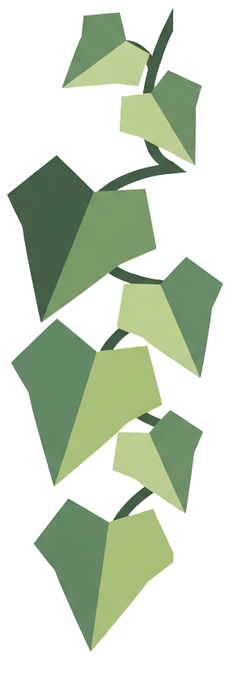
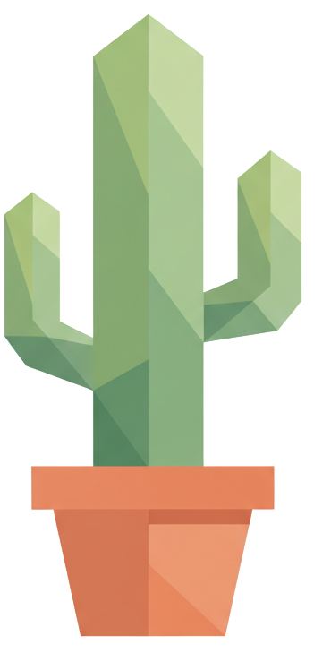
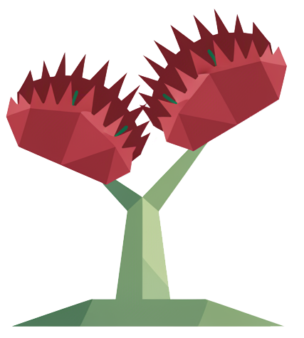

Bağlanma Tarzı
ECR-S Modeli — 4 Bağlanma Tipi
SECURE
Güvenli Bağlanma
Ana Özellikler
İlişkide
İlişkide sağlıklı bir denge kurar. Hem yakınlık hem de bireysel alan ihtiyacını doğal bir şekilde yönetir. Stresli anlarda partnerine yönelmeyi bilir, ancak aşırı bağımlı olmaz. İlişkide kendini güvende hisseder ve bunu partnerine de yansıtır.

ANXIOUS
Kaygılı Bağlanma
Ana Özellikler
İlişkide
İlişkide çok fazla yakınlık ister ve partnerinin ilgisini sürekli ölçer. Mesajlara geç yanıt gelmesi veya planların değişmesi gibi küçük şeyler bile büyük kaygıya neden olabilir. Partner uzaklaştığında daha çok yapışma eğilimi gösterir, bu da bazen ters etki yaratabilir.

AVOIDANT
Kaçıngan Bağlanma
Ana Özellikler
İlişkide
İlişki derinleştikçe içgüdüsel olarak geri çekilir. Duygusal konuşmalardan kaçınır ve "her şey yolunda" der. Partnerinin ihtiyaçlarını görmezden gelebilir, çünkü kendi duygusal ihtiyaçlarını bastırmaya alışmıştır. Bağımsızlığını korumak ilişkiden daha önemli hissedilir.

FEARFUL
Korkulu Bağlanma
Ana Özellikler
İlişkide
İçsel bir çelişki yaşar: Bir yandan yakınlık ve sevgi isterken, öbür yandan bunun acı vereceğinden korkar. Bu nedenle ilişkide bazen çok yakın, bazen çok uzak olabilir. Partneri şaşırtabilir çünkü davranışları değişkendir. Güven inşa etmek zaman alır ama mümkündür.